东京大学 PEAK
A-Level / AP 课程体系，英语能力突出。重点在学术兴趣表达、活动经历筛选和面试中的国际化表达。
SHINKA = 進化 · Evolution
辛佳教育从日本留学出发，现已覆盖香港、新加坡、美国、欧陆、英联邦及多地区混申。我们帮助学生和家庭在复杂选择中看清路径、建立竞争力，并为升学后的职业与长期成长提前布局。
Shinka Education is an evolution-oriented study abroad planning brand, supporting Japan, Hong Kong, Singapore, the United States, Continental Europe, Commonwealth destinations, and multi-region applications.

What Shinka Means
Shinka 来自日语「進化」，意为 evolution。对我们来说，进化不是盲目追逐排名，而是学生和家庭在复杂信息中逐渐看清自己、理解环境、建立判断，并走向更理想状态的过程。
Evolution is not blind acceleration. It means making clearer decisions, building real capability, and choosing an education path that can support long-term growth.
Admissions & Cases
用户不只需要看到“录了名校”，更需要知道“什么背景、走了哪条路径、难点在哪里”。本模块统一展示真实 offer 截图、25-26 申请季阶段性成果，以及本科、硕士、港新代表案例。以下仅为部分案例，更多案例可具体详询。
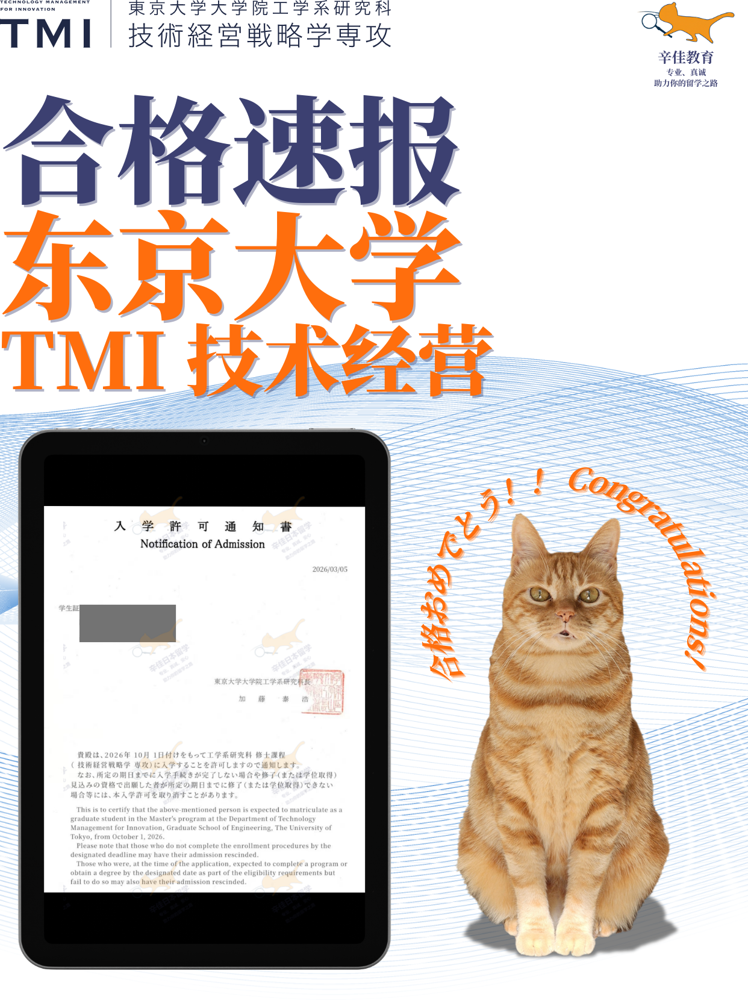
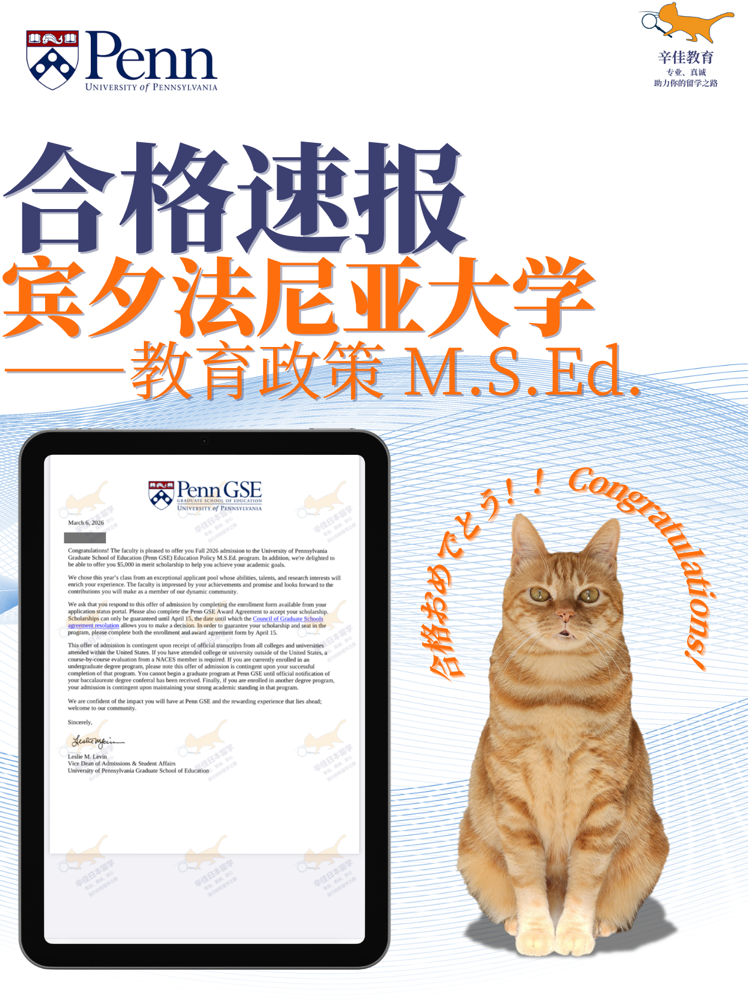
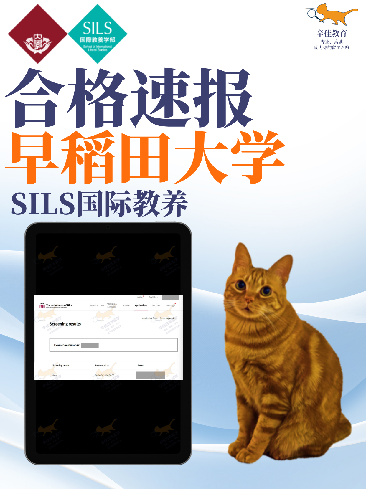
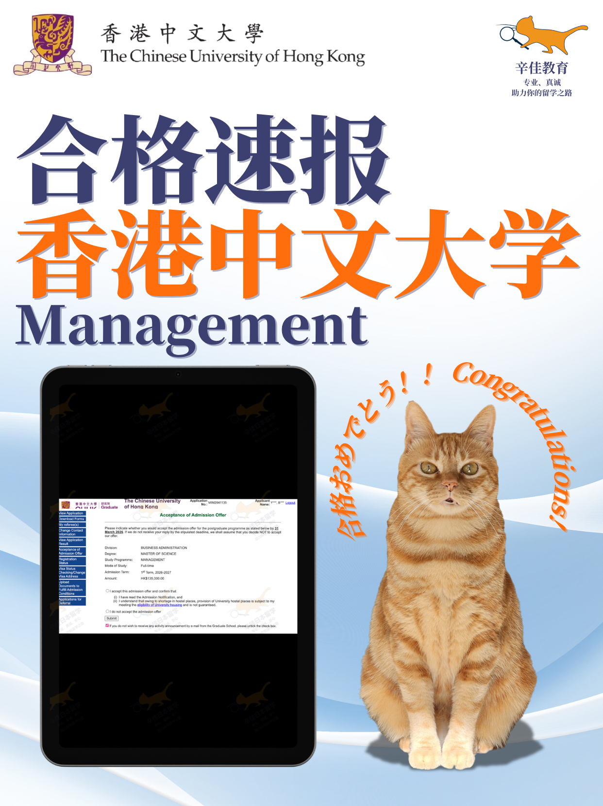
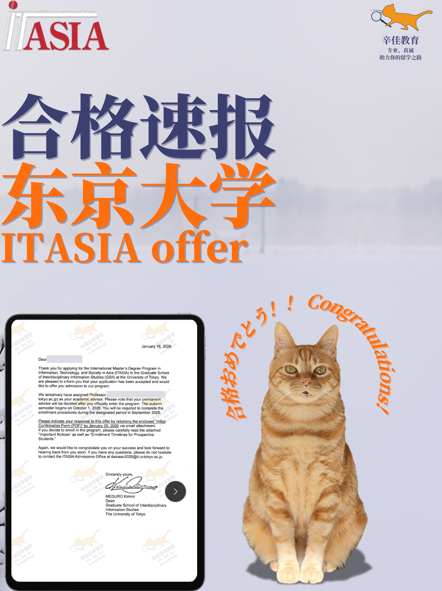
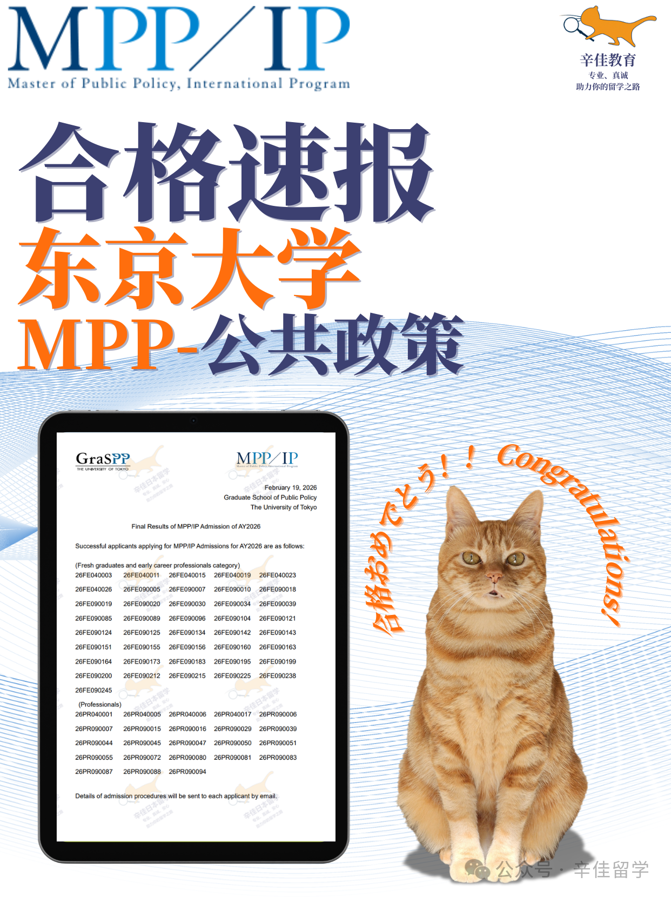
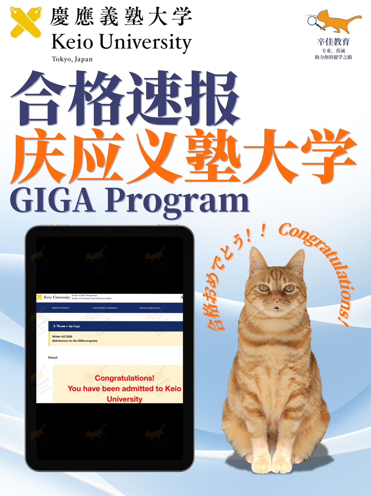
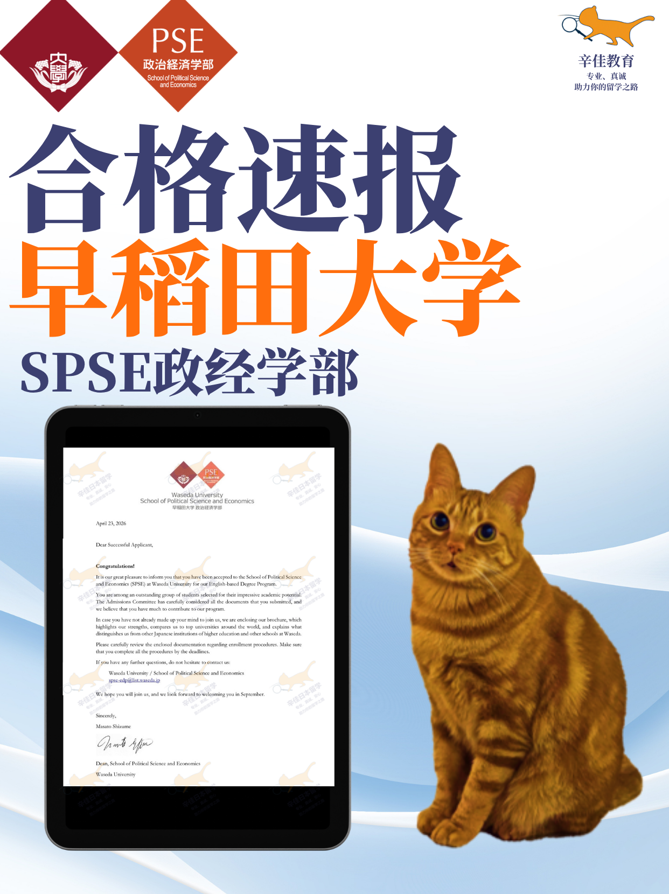
面向国际课程、海外高中和英语能力突出的学生，重点看标化、活动、文书叙事和面试表达。
A-Level / AP 课程体系，英语能力突出。重点在学术兴趣表达、活动经历筛选和面试中的国际化表达。
国际课程体系，目标明确但活动素材分散。通过文书主线重构，把学术兴趣、跨文化经历和未来方向连接起来。
A-Level 体系，SAT 1500 左右。项目招生规模小，对标化、文书质感和面试表现要求极高。
国际课程背景，理工方向兴趣明确。申请重点在奖学金竞争、学术潜力呈现和英文面试训练。
国际课程体系学生，多项目组合申请。重点在文书差异化、活动叙事和面试准备。
国际课程体系，经济/政治兴趣较强。重点在标化匹配、社会议题表达和申请项目组合。
国际课程体系，关注文化、语言与跨文化沟通。文书重点在个人经历与项目定位的连接。
国际课程体系背景，重视标化门槛、英文表达、经济学兴趣和面试筛选。
国际课程体系，政策、科技与社会方向兴趣明显。重点在项目 fit 和面试表达。
普通高中 + 活动经历丰富，英语成绩达标。重点在活动素材筛选和人间科学方向的动机表达。
国际课程体系，适合作为早庆之外的高质量组合。重点在专业方向、文书定位和申请梯度。
国际关系方向申请，适合作为关西私立与国际关系方向补充选择，重视文书动机和英文表达。
覆盖 SGU、研究生/旁听生、大学院直考和跨学科项目，重点看研究计划、教授匹配、文书和面试。
211 传媒类院校背景，突破高门槛文社科项目。关键在研究计划书深度、教授匹配与学术面试表达。
Top 2 / 美本 / 华五等背景均有录取。项目重视 Kira、面试表现、语言成绩和公共政策相关经历。
美本、双非、华五等背景均有代表案例。该方向更看重研究方向契合度和计划书质量。
211 传媒类院校、中国香港地区顶尖院校背景。重点在跨学科研究方向和教授匹配。
C9 理工背景，科研和教授沟通非常关键。适合目标工程、金融工程、量化等方向学生。
985 背景，面试重视学术功底和研究计划细节，需要提前做压力测试式模拟。
双非背景录取京大。核心不是包装，而是研究方向高度匹配、计划书充分打磨和面试中的研究热情。
211 传媒类、外语类、985、日本私立名校等背景均有录取。本季 10 枚，未来面试准备需要前置。
211/985 理工类、海外院校等背景。适合希望走 IT 和技术应用路线的学生。
985、211、C9 等背景。文社科方向竞争上升，研究计划和教授匹配越来越关键。
港澳院校、海外院校、中外合办等多元背景。本季 9 枚，教授沟通和综合面试表现是关键。
211、美本、英本、日本本科、985 等背景。适合媒体、设计、政策、科技与社会交叉方向。
985、211、双非背景均有录取。上智大学对院校背景包容度较高，更看重研究计划完成度。
985/211 与海外本科背景均有案例，商科英文项目，重点看 GPA、语言成绩、课程匹配和申请材料完整度。
211、双非等背景均有案例。适合政策、国际关系和国际合作方向学生。
覆盖御茶水女子大学、东北大学等国公立院校，适合先适应日本学术环境再考修士的学生。
港新方向单独成组展示，重点说明院校背景、专业匹配、实习经历、职业导向和文书策略。
海本 / 陆本高绩点背景，重点在专业匹配、实习经历呈现和职业目标表达。
量化、商科或数据相关背景，申请重点在课程匹配、实习项目和数据能力表达。
理工、商科和交叉背景均可规划，重点在 GPA、项目经历和申请时间线管理。
985/211、海本或强实习背景更具竞争力，重点在职业导向和项目 fit。
适合工科、商科、数据、教育等方向，重点在项目选择和材料差异化。
适合希望兼顾亚洲就业、排名、预算和录取概率的学生，需统一材料主线再做项目适配。
以上仅为部分案例。更多按专业、背景、目标院校拆分的案例，可在咨询时具体了解。
Brand Philosophy
Study abroad is not a transaction. It is a turning point in a student's evolution.
好的留学规划，不只是“申请到哪所学校”，而是帮助学生更清楚地理解自己：我适合什么学科？我该去哪个地区？这个项目能否支持我的职业路径？我需要补足什么能力？家庭资源应该如何投入？
A strong application plan should clarify the student's academic fit, regional choices, long-term career direction, capability gaps, and family-level resource allocation.
因此，辛佳教育的工作方式不是流水线包装，而是把路径判断、申请策略、文书研究、面试训练、职业方向和长期成长放在同一个系统里处理。
Pathway Guide
很多学生和家长的问题不是“能不能申请”，而是“不知道该走哪条路”。路径判断做错，后面的文书、选校和面试都会被带偏。
Services
新版辛佳教育把服务拆成完整的成长路径：日本申请、港新申请、美国申请、欧陆与英联邦申请、多地区混申、语言培训、实习/背景提升与职业导向规划。每条路径由对应方向的专业顾问与名校导师参与。
Our service system covers applications, language training, internships and profile-building, multi-region strategy, and career-oriented planning.
辛佳教育的核心起点，覆盖本科英文项目、SGU 硕士、研究生/旁听生、大学院直考与教授内诺。
面向目标港大、港中文、港科大、新加坡国立大学、南洋理工大学等亚洲顶尖院校的学生。
Hong Kong and Singapore applications for HKU, CUHK, HKUST, NUS, NTU, and other leading programs.
港三、新二均已取得录取。由原大机构港新方向专业顾问负责。
覆盖美国硕士、博士、研究型项目、职业导向型项目，重点处理文书叙事、推荐信、科研/实习呈现和项目 fit。
US applications with emphasis on storytelling, recommendation strategy, research/internship positioning, and program fit.
藤校方向已取得录取。由具备原大机构经验与藤校背景的顾问参与。
覆盖英国、加拿大、澳大利亚、荷兰、德国、法国、北欧、瑞士等方向。
UK, Canada, Australia, and Continental Europe applications, including G5 and research-oriented master's/PhD pathways.
G5 方向已取得录取。由牛津、G5、欧陆硕博背景导师协作。
日本 + 港新 + 美国 + 欧陆/英联邦组合申请，不是简单多投学校，而是一套风险管理系统。
Multi-region strategy is a risk management system across admissions probability, cost, career options, and long-term fit.
不同地区顾问共同参与，统一主线材料，再做地区适配。
覆盖日语、托福、雅思、学术英语写作、面试口语等方向，与申请时间线联动规划。
Japanese, TOEFL, IELTS, academic writing, and interview communication training aligned with the application timeline.
语言不是孤立备考，而是服务于申请材料、面试和入学后的学习。
围绕目标专业和申请地区，持续讨论科研、实习、项目、竞赛、作品集和表达能力的补足。
Ongoing profile-building support across internships, research, projects, competitions, portfolios, and communication skills.
不是临时包装，而是根据目标路径持续补短板。
面向希望通过留学转专业、转地区、转行业、留当地就业或回国升级的学生。
Career-oriented planning for students using study abroad to change fields, regions, industries, or long-term opportunities.
把专业选择、实习补足、AI 时代能力和职业路径一起判断。
Testimonials
以下引用来自学员好评文件夹。正式上线前建议继续检查隐私信息，必要时打码。
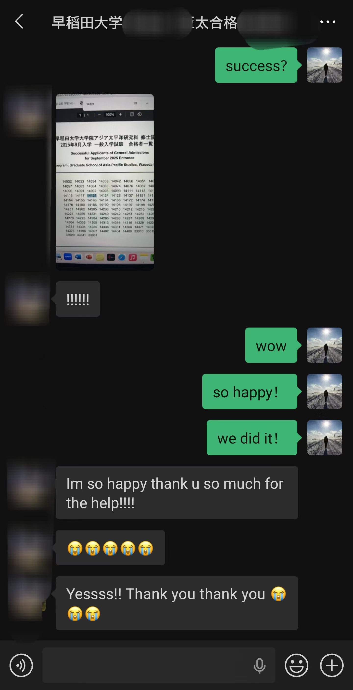
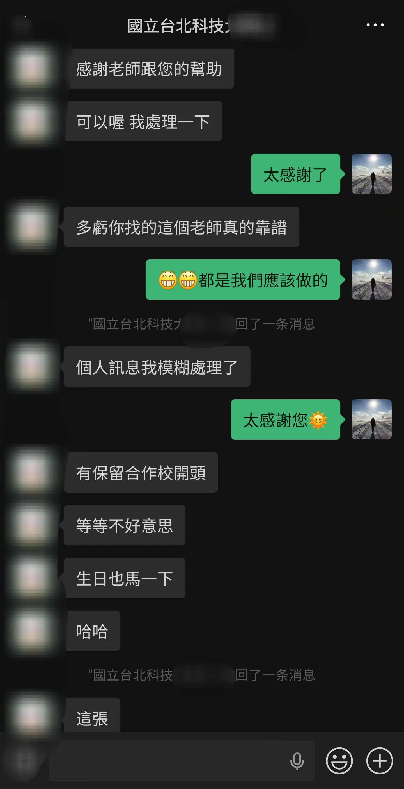
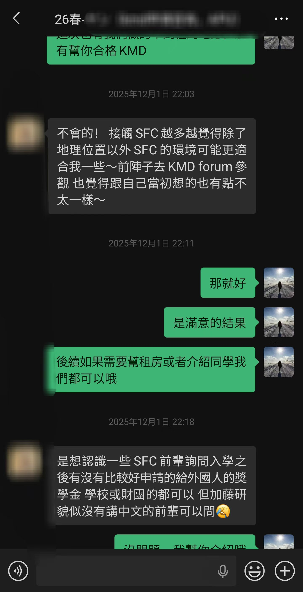
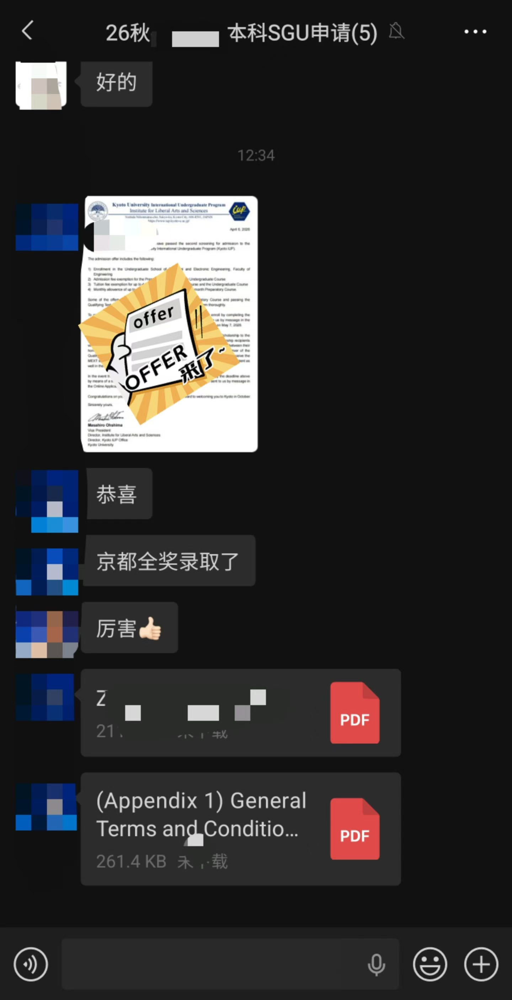
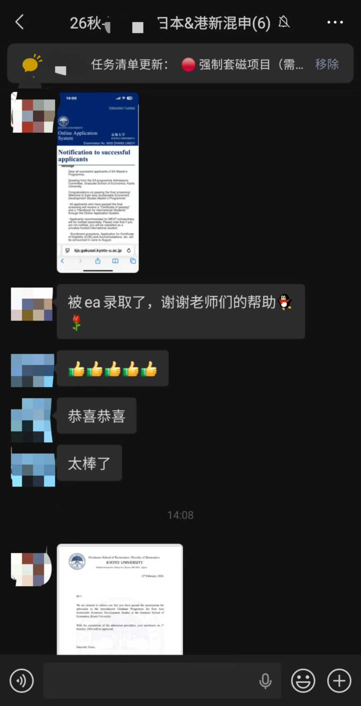
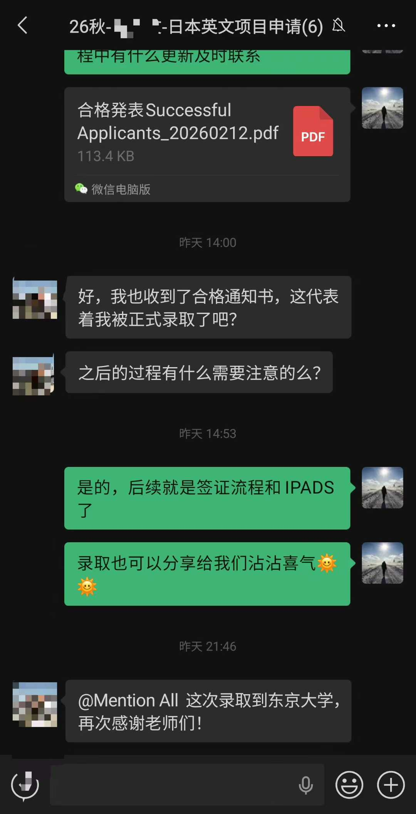
Our Story
From online Q&A to a dedicated admissions team.
旧版故事里，我们一直保留着一个重要起点：辛佳不是先有一套产品，再去寻找学生；而是从一个个真实问题、一次次线上答疑、一个个具体案例里长出来的。
Shinka did not begin as a packaged service. It grew from real questions, real students, and the need for more careful admissions judgment.
创始人 Jaden 在日本留学和申请过程中积累了一手经验，最早只是在线上回答学生关于日本留学、SGU、研究生制度、大学院申请和教授联系的问题。第一批学生的录取，让我们意识到：认真解释信息差，本身就能改变一个学生的路径。
通过学生转介绍和口口相传，越来越多学生开始请辛佳协助选校、研究计划书、教授联系、文书和面试。我们也开始把原本零散的经验，整理成更稳定的评估、推进和反馈流程。
辅导学生数量增加后，我们不再只依赖单点经验，而是逐步引入不同院校、不同专业方向的导师参与。日本本科英文项目、SGU、研究生/旁听生、大学院直考等路径开始被拆分得更细。
这一年我们经历了行业变化和服务挑战，也更清楚地意识到，留学申请不能只追求签约和数量。辛佳开始更坚定地做精品服务：少做虚假承诺，少做过度包装，把路径判断、材料质量和过程陪伴放在前面。
我们全面复盘服务体系，把选校、研究计划、教授匹配、文书、面试和进度管理放进同一个协作系统里。对学生来说，辛佳不只是“帮忙申请”，更像一个围绕目标持续推进的申请 studio。
导师与顾问阵容继续扩充，加入牛津大学、芝加哥大学、新加坡国立大学、香港大学、G5、欧陆硕博等背景的专业顾问。服务范围从日本进一步延展到港新、美国、英联邦、欧陆和多地区混申。
25-26 申请季日本方向目前已取得 150+ offer，覆盖 20+ 所院校，东京大学、京都大学、早稻田大学、庆应义塾大学四校录取 100+，本季结果仍在持续更新中。2019 年至今，辛佳累计取得 500+ 录取。新的品牌阶段，我们希望把“进化”讲得更清楚：录取是结果，学生的判断力、表达力、学术方向和长期路径同样重要。
Global Applications
香港、新加坡、美国、英国、欧陆等地区的录取逻辑差异很大。辛佳教育会根据学生的目标地区和专业方向，匹配具备对应背景的顾问与导师，而不是用同一套模板处理所有申请。
Global applications are led by region-specific advisors and mentors with backgrounds from Ivy League universities, Oxford, HKU, NUS, G5 institutions, and other top universities.
Mentors & Advisors
Specialist advisors for each region and field.
Kimi（东大经济）、Jay（京大社会学）、Zoey（东大经营）、Tina（东大 ITASIA）、Sean（早大 GSICCS / GSAPS）、Ashley（京大 MBA）、Yui（东大教育）、Jane（早大体育科学）、Bowen（庆应 KMD）、Chris（庆应 SDM）。
Zen（东大 IME）、Jim（东京科学大学博士）、Godfrey（东大新领域）、Boris（东大生物科学），覆盖计算机、信息科学、工程、生命科学、科研指导与理工科面试。
Wayne（Oxford / UCL）、Silver（UChicago / 欧陆 PhD）及具备原大机构经验的顾问，负责英国、美国、加拿大、澳大利亚、欧陆硕博等方向。
由香港大学、新加坡国立大学等背景顾问与导师参与，结合原大机构申请流程经验，负责港三、新二、G5、藤校与多地区混申策略。
Method
Listen. Judge. Build. Evolve.
先理解学生和家庭真正困惑的是什么，而不是直接推荐国家或套餐。
Listen to the real problem before recommending a path.在院校、专业、预算、时间线、就业与风险之间建立优先级。
Judge priorities across schools, majors, cost, timeline, careers, and risk.把文书、研究计划、教授匹配、面试和材料管理落成可执行流程。
Build an executable application system.让留学成为学生能力升级和职业路径展开的一部分，而不是孤立结果。
Make study abroad part of long-term growth.Process
像一个小型申请 studio 一样协作，顾问、导师、文书和学生围绕同一目标持续沟通。
学校、专业、GPA、语言、科研、实习、预算和目标地区一起判断，先确定路线再开始申请。
建立冲刺、稳妥、保底梯度，解释每个项目的风险，并把截止日期拆成可执行计划。
围绕研究兴趣、文献、问题意识、方法和教授匹配做充分头脑风暴，不只是简单润色。
PS、CV、推荐信、研究计划书、作品集、补充材料统一管理，保证主线一致。
根据目标专业持续建议科研、实习、项目、竞赛、语言和表达能力补足。
套磁、Kira、教授面谈、正式面试和模拟训练，重点训练学术表达和现场应答。
申请季很长，我们会持续同步进度、提醒风险，也在焦虑和等待阶段提供稳定支持。
提交申请、跟进结果、比较 offer、签证和入学前准备，并继续讨论后续学习和职业路径。
Insights
这里不做临时动态堆叠，只放适合长期公开、能帮助学生和家庭做决策的内容。涉及学校政策、录取数据和学生案例的文章，会在核验后继续补充。
FAQ
我们的正式路径咨询是收费的。它不是简单回答“能不能申”，而是基于你的背景、目标地区、预算、时间线和家庭诉求，做一次相对完整的路径判断。适合已经认真准备留学、需要判断国家/地区组合、院校层次、申请难度和服务匹配的学生与家长。
我们会先看你的基础信息，再判断问题属于日本、港新、美国、欧陆/英联邦单申，还是多地区混申。如果背景信息不完整，会先建议补充材料；如果需求明确，再进入付费咨询或后续服务沟通。
不是。SGU 可以用英语申请和学习，但顶尖项目非常看重研究计划、文书逻辑、语言表达、教授匹配和面试表现。
有机会，但不能靠幻想。研究方向匹配、计划书质量、面试表现和项目选择都必须足够扎实。
不是。有效混申是一套风险管理系统，需要统一专业方向、材料主线、预算、就业地点和时间线。
全球申请不会由通用顾问一把抓。港新、美国、欧陆/英联邦方向会由具备原大机构经验、藤校、牛津、港大、新加坡国立大学、G5 或欧陆硕博背景的顾问和导师参与，按地区和专业拆分判断。
我们会像 studio 一样围绕学生建立沟通和推进机制，覆盖选校策略、材料管理、研究计划工作坊、文书、推荐信、教授沟通、面试训练、背景提升持续咨询、情绪支持、offer 决策和行前准备。
是。网站只展示部分代表案例和部分 offer 截图。更多按专业、背景、目标院校拆分的案例，可以在咨询时结合你的方向具体说明；涉及学生隐私的信息会做脱敏处理。
建议准备学校、专业、GPA、语言成绩、标化成绩、科研/实习/活动经历、目标地区、预算和最担心的问题。
Start Here
告诉我们你的学校、专业、GPA、语言成绩、目标地区、预算和当前困惑。我们会先判断你适合日本、港新、美国、欧陆/英联邦单申，还是多地区混申。
Share your academic background, target regions, language scores, budget, and key concerns. We will help assess the most suitable path.
扫码填写飞书咨询问卷，适合希望先提交背景、目标地区和当前问题的学生与家长。
 Feishu consultation form
Feishu consultation form
添加微信后可发送背景信息，适合需要进一步判断申请路径、服务匹配和时间线的咨询。
 Personal WeChat
Personal WeChat